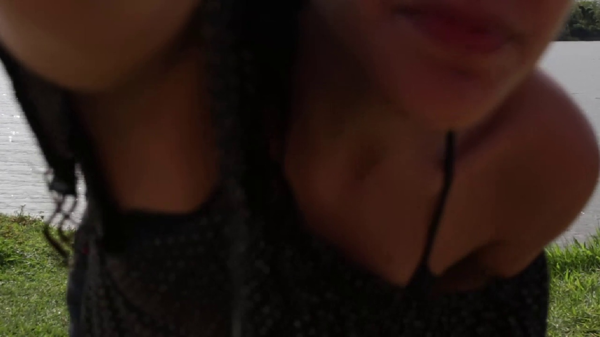

A Boca que te Mantém Vivo

Análises da Turma
Crítica 01: Este e-mail contém ideias e dicas para os meus companheiros de sala que gravaram o curta metragem popularmente conhecido como "Boca".
• Cortar do minuto 00:00 até 02:15 os primeiros minutos não agregam em nada na montagem e não apresentam a personagem de uma boa maneira, além de que é perfeitamente possível entender a partir do minuto 02:15.
• Na cena do carro, ao invés da montagem com o material externo acontecer no nada, quando ela toma o energético, colocaria a montagem enquanto ela conversa com a mãe. Assim cortando a parte do energético e acelerando a montagem. Os planos laterais dela se repetem e são monótonos. (minutagem 02:33 até 4:00)
• Também cortaria de 4:00 até 4:55 e colocaria só a cena final dela fechando a porta do carro, formando uma elipse.
• Novamente, por mais que a cena inicial apresenta o bolo, ela ainda coloca uma vela, e ainda entendemos que é um bolo, não precisamos dos 2min inicial da cena.
• Uma vez dela se preparando para a foto é o suficiente, mas acho que a tremida da câmera quando ela sai de quadro é importante para entendermos que é a câmera dela gravando. Acho desnecessário o material de arquivo do fotógrafo ao pôr do sol. Pois, já temos a ideia dela ali gravando, colocar essa camada a mais quebra a imersão pois está em um tempo esquisito.
• Ela aparece 3 vezes para arrumar a câmera, 2 já seriam o suficiente, ou talvez uma vez.
• Sobre o final, o curta é sobre essa transformação, acredito que faltou material de alguma cena com o pai e ela pescando, algo mais sentimentalista, por ser um curta grande ficamos bem distante da personagem e os momentos de reflexão não estão bem encaixados, poderia resolver com uma trilha sonora emocional e etc. mas acredito que cortar já resolva.
O total cortado é de 4min e 35seg. O curta ainda teria 8min e 3 segundos. Outra sugestão é cortar toda a cena do carro e da conversa da mãe, deixando somente ela saindo do carro e o momento importante, ainda funciona e talvez funcione melhor. Não tenham dó de cortar!! É assim que se experimenta a montagem.
• Cortar do minuto 00:00 até 02:15 os primeiros minutos não agregam em nada na montagem e não apresentam a personagem de uma boa maneira, além de que é perfeitamente possível entender a partir do minuto 02:15.
• Na cena do carro, ao invés da montagem com o material externo acontecer no nada, quando ela toma o energético, colocaria a montagem enquanto ela conversa com a mãe. Assim cortando a parte do energético e acelerando a montagem. Os planos laterais dela se repetem e são monótonos. (minutagem 02:33 até 4:00)
• Também cortaria de 4:00 até 4:55 e colocaria só a cena final dela fechando a porta do carro, formando uma elipse.
• Novamente, por mais que a cena inicial apresenta o bolo, ela ainda coloca uma vela, e ainda entendemos que é um bolo, não precisamos dos 2min inicial da cena.
• Uma vez dela se preparando para a foto é o suficiente, mas acho que a tremida da câmera quando ela sai de quadro é importante para entendermos que é a câmera dela gravando. Acho desnecessário o material de arquivo do fotógrafo ao pôr do sol. Pois, já temos a ideia dela ali gravando, colocar essa camada a mais quebra a imersão pois está em um tempo esquisito.
• Ela aparece 3 vezes para arrumar a câmera, 2 já seriam o suficiente, ou talvez uma vez.
• Sobre o final, o curta é sobre essa transformação, acredito que faltou material de alguma cena com o pai e ela pescando, algo mais sentimentalista, por ser um curta grande ficamos bem distante da personagem e os momentos de reflexão não estão bem encaixados, poderia resolver com uma trilha sonora emocional e etc. mas acredito que cortar já resolva.
O total cortado é de 4min e 35seg. O curta ainda teria 8min e 3 segundos. Outra sugestão é cortar toda a cena do carro e da conversa da mãe, deixando somente ela saindo do carro e o momento importante, ainda funciona e talvez funcione melhor. Não tenham dó de cortar!! É assim que se experimenta a montagem.
Crítica 02: Acho interessante o uso recorrente do tempo real no curta metragem, mas acredito que nem todas cenas estão funcionando dessa forma, e em algumas a montagem poderia ser repensada para valorizar mais os pontos fortes do filme.
A cena final é a cena em que acredito que o tempo real mais funciona bem. Ainda acho que a cena poderia ser um pouco mais curta, principalmente no momento em que a atriz está nadando na água (o plano dela triste, antes de entrar na água, e depois o plano dela sentada olhando o rio, são planos muito fortes mas que perdem um pouco do impacto pelo plano no meio dela nadando, que dura bastante e não é tão forte quanto os anteriores).
Agora, tanto a cena da casa quanto a do carro acho que seria bom que fossem feito mais testes em relação à montagem, pois são sequências que eu achei o ritmo um pouco mais estranho. Em relação à cena da casa, minha sugestão seria de fazer mais elipses e cortar mais do conteúdo "fraco" da cena, como por exemplo:
No primeiro plano, o enquadramento da atriz com a urna é bem legal, mas o movimento que leva a esse plano é um pouco tremido e distrai. Eu tentaria ver como é começar com o som do fogão em off e cortar para o plano com o movimento já finalizado e a atriz bem enquadrada.
- Na hora que a atriz vai pegar o brownie, ela some do quadro por vários segundos. Depois disso, ainda leva um tempo para a gente conseguir ver o brownie em si, então nessa cena acho que não deveria ser usado o tempo real, e tentar na montagem valorizar os melhores momentos da cena.
- O plano das fotos vem ao final da cena, meio perdido na montagem. Acho que poderia ser utilizado anteriormente, entre planos, até para ajudar na criação de mais elipses para a cena.
Já na cena do carro, não acho que precisa ser mais curta, mas acho que está linear e simples demais. Pelo o que entendi, a personagem está com muita coisa na cabeça (e por isso o material externo?) ao mesmo tempo que tenta dialogar com a mãe e torna tudo meio desconfortável. Mas acho que tanto o material externo quanto a cena em si está linear demais. Dá pra misturar mais os planos do carro, ir alternando, parecer mais que a personagem não quer estar naquela conversa. O material de arquivo também pode ir aparecendo em momentos mais diferentes, até durante a conversa com a mãe (para afastar a personagem do momento). Pode ser até bem interessante repetição de planos, cortes secos, cortes rápidos e sobreposições.
Não sei se ficou muito confuso, mas tipo a cena tá muito linear tipo: personagem lembrando das coisas -> recebe ligação -> atende ligação -> conversa.
Mas a cena poderia ficar bem interessante se misturasse todas essas ações, uma representação visual que ela é uma personagem que não entende ainda tudo que está sentindo.
Enfim, diria que essas são as coisas que mais senti que poderiam mudar, e acho que, inclusive, pela pequena quantidade de cenas, é possível fazer vários testes e brincar mesmo com os planos, sem medo de ficar diferente do planejado, pra tentar achar o ponto forte e único que cada cena possui.
A cena final é a cena em que acredito que o tempo real mais funciona bem. Ainda acho que a cena poderia ser um pouco mais curta, principalmente no momento em que a atriz está nadando na água (o plano dela triste, antes de entrar na água, e depois o plano dela sentada olhando o rio, são planos muito fortes mas que perdem um pouco do impacto pelo plano no meio dela nadando, que dura bastante e não é tão forte quanto os anteriores).
Agora, tanto a cena da casa quanto a do carro acho que seria bom que fossem feito mais testes em relação à montagem, pois são sequências que eu achei o ritmo um pouco mais estranho. Em relação à cena da casa, minha sugestão seria de fazer mais elipses e cortar mais do conteúdo "fraco" da cena, como por exemplo:
No primeiro plano, o enquadramento da atriz com a urna é bem legal, mas o movimento que leva a esse plano é um pouco tremido e distrai. Eu tentaria ver como é começar com o som do fogão em off e cortar para o plano com o movimento já finalizado e a atriz bem enquadrada.
- Na hora que a atriz vai pegar o brownie, ela some do quadro por vários segundos. Depois disso, ainda leva um tempo para a gente conseguir ver o brownie em si, então nessa cena acho que não deveria ser usado o tempo real, e tentar na montagem valorizar os melhores momentos da cena.
- O plano das fotos vem ao final da cena, meio perdido na montagem. Acho que poderia ser utilizado anteriormente, entre planos, até para ajudar na criação de mais elipses para a cena.
Já na cena do carro, não acho que precisa ser mais curta, mas acho que está linear e simples demais. Pelo o que entendi, a personagem está com muita coisa na cabeça (e por isso o material externo?) ao mesmo tempo que tenta dialogar com a mãe e torna tudo meio desconfortável. Mas acho que tanto o material externo quanto a cena em si está linear demais. Dá pra misturar mais os planos do carro, ir alternando, parecer mais que a personagem não quer estar naquela conversa. O material de arquivo também pode ir aparecendo em momentos mais diferentes, até durante a conversa com a mãe (para afastar a personagem do momento). Pode ser até bem interessante repetição de planos, cortes secos, cortes rápidos e sobreposições.
Não sei se ficou muito confuso, mas tipo a cena tá muito linear tipo: personagem lembrando das coisas -> recebe ligação -> atende ligação -> conversa.
Mas a cena poderia ficar bem interessante se misturasse todas essas ações, uma representação visual que ela é uma personagem que não entende ainda tudo que está sentindo.
Enfim, diria que essas são as coisas que mais senti que poderiam mudar, e acho que, inclusive, pela pequena quantidade de cenas, é possível fazer vários testes e brincar mesmo com os planos, sem medo de ficar diferente do planejado, pra tentar achar o ponto forte e único que cada cena possui.
Crítica 03: Acredito que o filme ganharia mais dinamismo com o uso de mais cortes secos e sequências mais rápidas. Na cena inicial, manteria o plano dela se levantando e indo à cozinha, mas aceleraria as ações de cortar o brownie e pegar os objetos, intercalando-as com as lembranças até chegar às fotos com o pai na parede da sala.
O mesmo poderia ser aplicado à cena do carro: após a conversa com a mãe, cortes mais rápidos conduziriam ao momento em que ela tenta reproduzir as fotografias. Os erros e o momento de colapso em que ela chora poderiam ser apresentados em planos curtos e cortes secos, intensificando a cena.
Na sequência do lago, manteria o plano só até ela jogar água no cabelo, depois cortaria para ela já no meio da água e retornaria à imagem dela sentada na borda para finalizar, sem ela ter que voltar até a câmera.
Acredito que essa abordagem valorizaria a montagem e daria mais fluidez à narrativa, seguindo a ideia dos poucos momentos em que o filme já utiliza cortes secos entre as ações.
O mesmo poderia ser aplicado à cena do carro: após a conversa com a mãe, cortes mais rápidos conduziriam ao momento em que ela tenta reproduzir as fotografias. Os erros e o momento de colapso em que ela chora poderiam ser apresentados em planos curtos e cortes secos, intensificando a cena.
Na sequência do lago, manteria o plano só até ela jogar água no cabelo, depois cortaria para ela já no meio da água e retornaria à imagem dela sentada na borda para finalizar, sem ela ter que voltar até a câmera.
Acredito que essa abordagem valorizaria a montagem e daria mais fluidez à narrativa, seguindo a ideia dos poucos momentos em que o filme já utiliza cortes secos entre as ações.
Crítica 04: Ao assistir ao curta A Boca que te Mantém Vivo, acredito que a montagem poderia explorar ainda mais a conexão, criando associações entre os momentos do presente e as possíveis memórias afetivas da personagem.
Outro ponto que me chamou a atenção foi a duração de algumas sequências. Na primeira parte, entre aproximadamente 00:25 e 02:20, acompanhamos diversas ações da personagem dentro de casa. Acredito que alguns desses momentos poderiam ser condensados, selecionando aqueles que realmente contribuem para demonstrar seu estado emocional. O mesmo poderia ser experimentado na sequência dentro do carro, entre 03:00 e 04:55. Essa redução permitiria reservar mais tempo para os momentos de maior carga emocional, especialmente quando ela chega ao local com a urna.
Na sequência próxima ao rio, acredito que a duração dos planos pode ser muito importante. O choro e a permanência da personagem naquele espaço precisam ter tempo para serem sentidos pelo espectador. Entretanto, seria interessante experimentar diferentes relações entre os enquadramentos, alternando planos mais abertos, que mostrem a solidão dela naquele ambiente, com planos mais próximos, que permitam perceber seu sofrimento. A montagem também poderia explorar pausas e silêncios, evitando cortes excessivos justamente nos momentos em que a personagem está enfrentando suas emoções.
Pensando no limite de tempo, minha sugestão seria reduzir algumas ações repetitivas do início e do deslocamento, preservando os planos que ajudam a construir a relação emocional da personagem com o pai e com aquele lugar. Acredito que o mais importante não seja mostrar todas as ações dela, mas selecionar aquelas que fazem o espectador sentir sua dificuldade de seguir em frente.
De modo geral, penso que a montagem tem a oportunidade de transformar elementos aparentemente cotidianos em manifestações da memória e da saudade. Essa construção pode mostrar que o luto não acontece apenas nos momentos em que a personagem chora, mas também na dificuldade de estar em um lugar que antes trazia felicidade e agora evidencia a ausência de alguém que não está mais ali.
Outro ponto que me chamou a atenção foi a duração de algumas sequências. Na primeira parte, entre aproximadamente 00:25 e 02:20, acompanhamos diversas ações da personagem dentro de casa. Acredito que alguns desses momentos poderiam ser condensados, selecionando aqueles que realmente contribuem para demonstrar seu estado emocional. O mesmo poderia ser experimentado na sequência dentro do carro, entre 03:00 e 04:55. Essa redução permitiria reservar mais tempo para os momentos de maior carga emocional, especialmente quando ela chega ao local com a urna.
Na sequência próxima ao rio, acredito que a duração dos planos pode ser muito importante. O choro e a permanência da personagem naquele espaço precisam ter tempo para serem sentidos pelo espectador. Entretanto, seria interessante experimentar diferentes relações entre os enquadramentos, alternando planos mais abertos, que mostrem a solidão dela naquele ambiente, com planos mais próximos, que permitam perceber seu sofrimento. A montagem também poderia explorar pausas e silêncios, evitando cortes excessivos justamente nos momentos em que a personagem está enfrentando suas emoções.
Pensando no limite de tempo, minha sugestão seria reduzir algumas ações repetitivas do início e do deslocamento, preservando os planos que ajudam a construir a relação emocional da personagem com o pai e com aquele lugar. Acredito que o mais importante não seja mostrar todas as ações dela, mas selecionar aquelas que fazem o espectador sentir sua dificuldade de seguir em frente.
De modo geral, penso que a montagem tem a oportunidade de transformar elementos aparentemente cotidianos em manifestações da memória e da saudade. Essa construção pode mostrar que o luto não acontece apenas nos momentos em que a personagem chora, mas também na dificuldade de estar em um lugar que antes trazia felicidade e agora evidencia a ausência de alguém que não está mais ali.
Crítica 05: Acho que o primeiro plano pode começar quando a urna funerária já tá enquadrado no lado direito do plano e então ele faz todo o movimento de subir, porque sinto que o enquadramento fica mais interessante dela olhando pra urna e que o movimento instável bem no comecinho atrapalha de eu me sentir submersa na história.
Infelizmente, o plano da cozinha ficou um pouco escuro e não consegui ver o que ela vinha embrulhando no papel alumínio, não sei se é algo que na color dá pra ajustar, espero que sim.
No geral e considerando as aulas em que conhecemos a história e a forma que foi produzido, as imagens gravadas ficaram muito boas. Queria que tivesse um plano dela no carro enquanto fala que não fosse só no espelho retrovisor, mostrar a linguagem corporal de como ela está se sentindo enquanto dirige ajudaria a criar a sensação de ela estar perdida e aflita com a perda do pai.
Sobre o material externo, não achei que combinaram com a estética do filme que foi gravado, acho que alguns deles funcionam por exemplo o da areia e do varal, só conseguem ser colocados em um lugar que demonstre melhor serem memórias dela e adicionar um filtro ou textura para construir uma estética única do filme, sem saber que são materiais gravados e externos só juntos. Quanto aos trechos que aparecem um homem sozinho, acho que não ficou muito legal. Pensando na direção, acho que pra fase de montagem, buscar vídeos que tenham o pai e a filha juntos, não só um homem sozinho aparecendo, construiria melhor a relação dos dois e pela falta dele, acrescentaria mais uma camada no filme por mostrar o peso da realidade e a perda dele. Focaria em procurar vídeos mais caseiros, ver se alguém da equipe não tem filmagens assim da infância e que deixariam ser usadas para o filme.
Gostei muito de vermos o filme na câmera dela em dado momento e do efeito de câmera lenta, acho que isso poderia ter sido mais explorado como linguagem do filme para criar o tempo passando e a sensação de vazio.
Gostei do plano dela entrando na água, acho que daria pra cortar o primeiro momento que ela molha o cabelo e já mostrar ela mais dentro da água e aí nadando. Teria que testar pra ver se isso faz sentido. Não deixar tudo entregue da ação pode ajudar a tirar um pouco da minutagem que está bem maior que o proposto pelo professor.
No mais, tenho opiniões quanto a direção e direção de arte sobre explorar a relação de tempo espaço, mas que não acho produtivo falar já que o filme está gravado e não tem como mudar. O foco das críticas é trabalhar com o que se tem e fazer um bom filme, acho que com alguns ajustes o Boca vai ser um bom filme.
Infelizmente, o plano da cozinha ficou um pouco escuro e não consegui ver o que ela vinha embrulhando no papel alumínio, não sei se é algo que na color dá pra ajustar, espero que sim.
No geral e considerando as aulas em que conhecemos a história e a forma que foi produzido, as imagens gravadas ficaram muito boas. Queria que tivesse um plano dela no carro enquanto fala que não fosse só no espelho retrovisor, mostrar a linguagem corporal de como ela está se sentindo enquanto dirige ajudaria a criar a sensação de ela estar perdida e aflita com a perda do pai.
Sobre o material externo, não achei que combinaram com a estética do filme que foi gravado, acho que alguns deles funcionam por exemplo o da areia e do varal, só conseguem ser colocados em um lugar que demonstre melhor serem memórias dela e adicionar um filtro ou textura para construir uma estética única do filme, sem saber que são materiais gravados e externos só juntos. Quanto aos trechos que aparecem um homem sozinho, acho que não ficou muito legal. Pensando na direção, acho que pra fase de montagem, buscar vídeos que tenham o pai e a filha juntos, não só um homem sozinho aparecendo, construiria melhor a relação dos dois e pela falta dele, acrescentaria mais uma camada no filme por mostrar o peso da realidade e a perda dele. Focaria em procurar vídeos mais caseiros, ver se alguém da equipe não tem filmagens assim da infância e que deixariam ser usadas para o filme.
Gostei muito de vermos o filme na câmera dela em dado momento e do efeito de câmera lenta, acho que isso poderia ter sido mais explorado como linguagem do filme para criar o tempo passando e a sensação de vazio.
Gostei do plano dela entrando na água, acho que daria pra cortar o primeiro momento que ela molha o cabelo e já mostrar ela mais dentro da água e aí nadando. Teria que testar pra ver se isso faz sentido. Não deixar tudo entregue da ação pode ajudar a tirar um pouco da minutagem que está bem maior que o proposto pelo professor.
No mais, tenho opiniões quanto a direção e direção de arte sobre explorar a relação de tempo espaço, mas que não acho produtivo falar já que o filme está gravado e não tem como mudar. O foco das críticas é trabalhar com o que se tem e fazer um bom filme, acho que com alguns ajustes o Boca vai ser um bom filme.